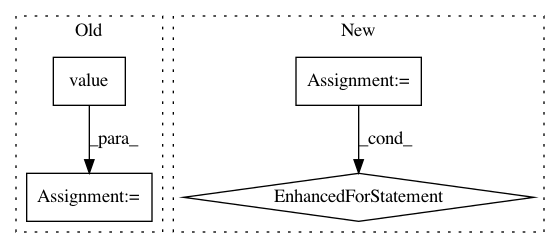

ee950b503eeed5aca3747a4bcf2a40f624b743a0,tensorforce/core/optimizers/synchronization.py,Synchronization,tf_step,#Synchronization#Any#Any#Any#,58
Before Change
deltas.append(delta)
return deltas
sync_frequency = self.sync_frequency.value()
skip_sync = (time - self.last_sync < sync_frequency)
return self.cond(pred=skip_sync, true_fn=no_sync, false_fn=apply_sync)
After Change
assert all(
util.shape(source) == util.shape(target)
for source, target in zip(source_variables, variables)
)
timestep = Module.retrieve_tensor(name="timestep")
def apply_sync():
update_weight = self.update_weight.value()
deltas = list()
for source_variable, target_variable in zip(source_variables, variables):
delta = update_weight * (source_variable - target_variable)
deltas.append(delta)
applied = self.apply_step(variables=variables, deltas=deltas)
In pattern: SUPERPATTERN
Frequency: 3
Non-data size: 4
Instances
Project Name: reinforceio/tensorforce
Commit Name: ee950b503eeed5aca3747a4bcf2a40f624b743a0
Time: 2019-01-21
Author: alexkuhnle@t-online.de
File Name: tensorforce/core/optimizers/synchronization.py
Class Name: Synchronization
Method Name: tf_step
Project Name: tiberiu44/TTS-Cube
Commit Name: f1ac81075ac88cf1fb9f701fc1ee78696edd078f
Time: 2018-10-31
Author: boros@adobe.com
File Name: cube/models/vocoder.py
Class Name: BeeCoder
Method Name: synthesize
Project Name: Scitator/catalyst
Commit Name: c6ea0fc2354e54e3ae76fee78702c8ee228ecad7
Time: 2019-10-29
Author: 34604336+jchen42703@users.noreply.github.com
File Name: catalyst/dl/callbacks/metrics/auc.py
Class Name: AUCCallback
Method Name: on_loader_end